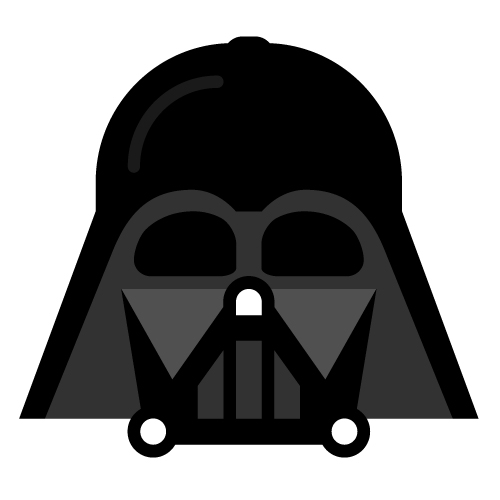
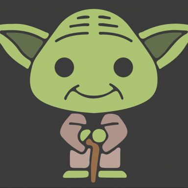

Alberto's Resume
Summary
Highly organised, self-motivated and strategic thinking Digital Project Manager, a positive person with over 10 years' experience in web marketing and advertising businesses. Customer relationship-oriented, accustomed to work under pressure dealing with work and clients’ needs. Commercially aware and switched on with a keen eye for details and a wealth of project management, client service and campaign planning experience. Proven experience of effectively managing projects from brief through to delivery.
Education
- 2011/12 - Master’s Degree in Digital Advertising and Web & Social Media Marketing
- 2010/11 - Bachelor’s Degree in Marketing and Brand Communication
- 2006/07 - Bachelor’s Degree in Communication Science
Work experience
- 2017/today - Digital Project Manager @TandP Group
- 2015/17 - Digital Project Manager @Saatchi&Saatchi
- 2013/15 - Digital Project Manager @TribooMedia
Skills
- Problem solving
- Diplomacy and communication skills
- Empathy and emotional intelligence
Tools
- Trello, Jira/Confluence
- VisualStudio Code, HTML, CSS, JS
- Photoshop, Illustrator, GTM, Analytics
Projects
-
Darth Vader's Project

-
Yoda's Project
